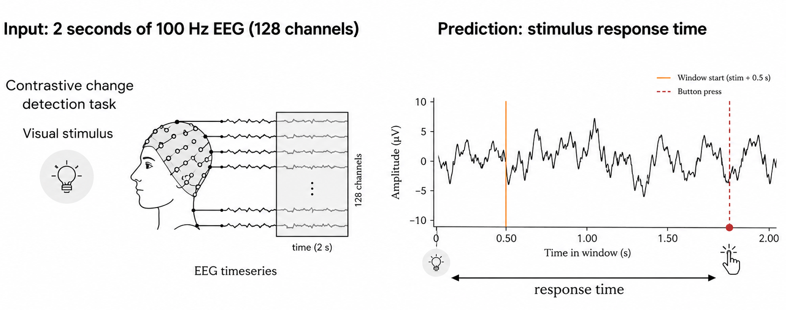
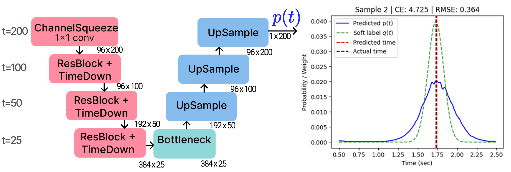
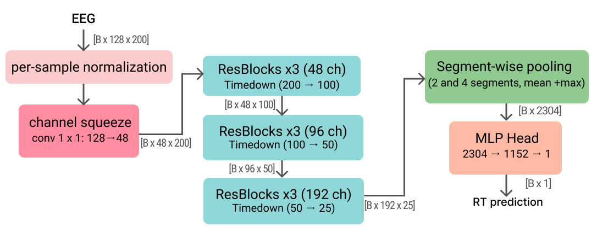
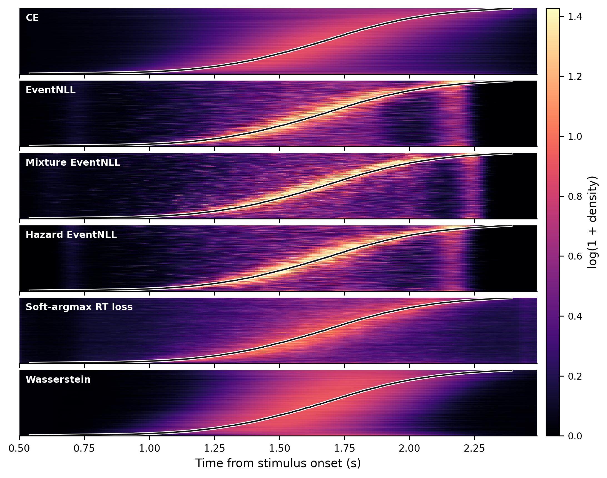
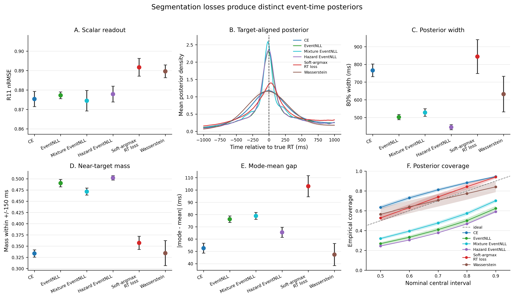
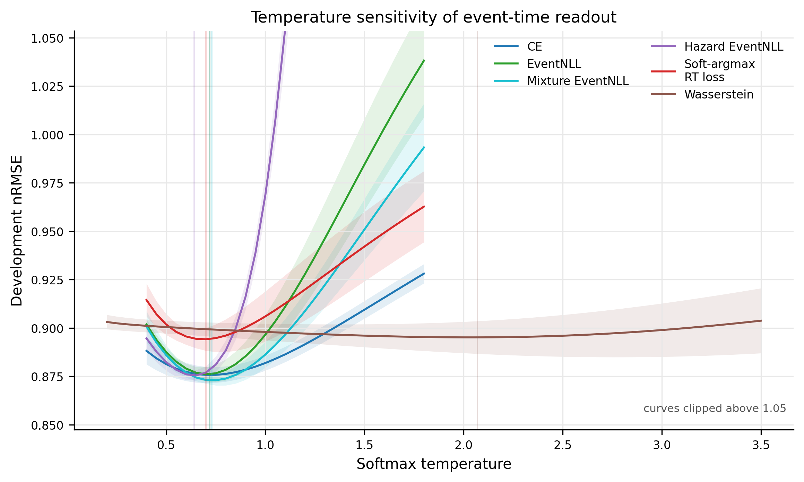

{kind=link}
01 / The question
A good prediction still leaves a question.
Which information in the EEG made that prediction possible?
This project grew from our solution to the NeurIPS 2025 EEG Foundation Challenge. The task was to predict a person's reaction time from a fixed EEG window. After the challenge, we stepped back to examine an idea behind the solution: a latency label might help a model locate relevant evidence in time.
A scalar predictor can use many cues: overall signal properties, differences between participants, or patterns tied to a fixed stimulus window. Low prediction error alone does not tell us whether the model tracks response-relevant timing within an individual trial.
Can a behavioral timestamp provide weak supervision for a model's representation of time?
Reaction time is measured at the button press. It reflects a sequence of sensory, decision, and motor processes. We therefore use it as a noisy clue about response-relevant timing, without assuming it marks one precisely annotated brain event.
{kind=link}

02 / A posterior over time
Give the output a time axis.
A single number becomes a distribution over 200 possible time bins.
Given an EEG window X, the model estimates pt(X): the probability assigned to each possible response-relevant event time. The probabilities sum to one. A concentrated distribution, a broad distribution, and a distribution with two peaks can have the same mean, yet describe very different timing hypotheses.
Encode the EEG
A temporal backbone produces a score for each of 200 bins, spaced 10 ms apart.
Learn timing probabilities
Behavioral RT constrains the distribution through a temporal target or an observation likelihood.
Read out reaction time
The posterior mean provides a scalar prediction for the same RT benchmark.
t0 is the crop start. gt is time within the crop. The weighted average returns a time measured from stimulus onset.
The key experimental control uses exactly this posterior-mean readout but trains it only on scalar RT error. This lets us ask whether supervising the distribution itself adds anything beyond a temporal output head.
Where does the neural network architecture enter?
ETS-U-Net is the primary backbone: a one-dimensional encoder-decoder with skip connections and time-resolved outputs. We also test a dilated temporal CNN, an Inception-style multiscale network, and an attention-based segmentation network. Their capacities are closely matched at about 3.1 million parameters.
{kind=link}

{kind=link}

03 / Ways to supervise
One behavioral label. Two ways to use it.
We compare an explicit distribution target with a latent-event likelihood. Both preserve a time-resolved output, but they express different assumptions about what RT tells us.
Soft-target supervision
Place a soft target around RT.
Turn the observed latency into a Gaussian-shaped target distribution qt(y) on the time grid. Cross-entropy (CE) trains the predicted distribution to match it.
The Gaussian bandwidth sets the softness of supervision. It is not a measured uncertainty in the participant's reaction time.
Likelihood-based supervision
Treat RT as a noisy observation.
EventNLL combines the latent event-time posterior with an observation kernel K(y | t). Training rewards event times that make the observed RT plausible.
The neural event is unobserved. Its possible times are summed over, rather than selecting a hard event-time label.
What changes between Gaussian, mixture, and hazard EventNLL?
Gaussian EventNLL uses a Gaussian observation kernel around each latent time. Mixture EventNLL combines a narrow and a wide Gaussian component centered at the same time, allowing some RT observations to be noisier.
Hazard EventNLL changes how the posterior is constructed. Each bin predicts the probability of an event now, conditional on no earlier event. These hazards produce a normalized event-time probability mass function, used in the same likelihood and expectation readout.
Why include Wasserstein and the RT-only control?
Wasserstein matches the cumulative distributions of the soft target and prediction. It explicitly accounts for how far probability mass moves on the ordered time axis.
RT-only soft-argmax supervises only the posterior mean through RT error. The distribution is otherwise unconstrained by an event-time target. It tests whether the temporal expectation readout alone explains the gain.
04 / Controlled evidence
Test the supervision, then change the backbone.
The benefit of CE and EventNLL persists beyond one architecture.
All main comparisons use the same subject-disjoint, release-separated protocol. Development data determine checkpoints and readout temperatures. R11 is held out until those choices are fixed.
73,030 trials
1,221 participants
17,348 trials
308 participants
15,164 trials
292 participants
Analyzed trials have RT within 0.5–2.5 s. There is no participant overlap between partitions. Results below are means ± sample standard deviation over five seeds (2025–2029).
| Model / objective | Supervision | nRMSE ↓ |
|---|---|---|
| ETR-CNN large | Strongest scalar regression baseline | 0.8928 ± 0.0042 |
| RT-only soft-argmax | ETS-U-Net, posterior mean only | 0.8917 ± 0.0046 |
| CE | ETS-U-Net, soft distribution target | 0.8753 ± 0.0039 |
| EventNLL | ETS-U-Net, Gaussian likelihood | 0.8772 ± 0.0018 |
| Mixture EventNLL | ETS-U-Net, two-scale likelihood | 0.8745 ± 0.0053 |
| Hazard EventNLL | ETS-U-Net, hazard posterior | 0.8778 ± 0.0041 |
| Wasserstein | ETS-U-Net, CDF matching | 0.8896 ± 0.0033 |
Paper Tables 3–4. Event-time results use development-selected readout temperature (τ-nRMSE). ETR-CNN large is the scalar reference. nRMSE is RMSE divided by the target standard deviation on the evaluated split.
Mixture EventNLL reduces nRMSE by about 2.1% relative to ETR-CNN large. The RMSE improvement is 6.24 ms (subject-bootstrap 95% CI: 4.50–7.97 ms), and the MAE improvement is 8.94 ms (7.43–10.49 ms). The gain is positive in all five matched seeds.
The absolute improvement is moderate. The more general result is the controlled pattern: CE and EventNLL outperform the RT-only mean-readout control. The leading objectives are close relative to seed variability, so their small differences in scalar accuracy should not be treated as a universal ranking.
Architecture control
The same question, four backbones
| Objective | Holdout τ-nRMSE ↓ |
|---|---|
| RT-only soft-argmax | 0.8917 ± 0.0046 |
| CE | 0.8753 ± 0.0039 |
| Mixture EventNLL | 0.8745 ± 0.0053 |
Table 5. Three supervision objectives, one fixed backbone. Lines in the plot show ±1 sample SD, not confidence intervals.
Across all four backbones, CE and mixture EventNLL improve the mean result over RT-only soft-argmax. This supports a supervision effect beyond the U-Net architecture. The separate external EEG baselines were trained from scratch; this study does not compare against their pretrained checkpoints.
05 / Beyond one number
Similar prediction error. Different posteriors.
Accuracy, temporal concentration, and uncertainty are separate questions.
A mean RT prediction discards the shape of its distribution. The posterior lets us examine how tightly mass is concentrated, how it aligns with the behavioral target, and how often its intervals contain observed RT.
{kind=link}

Concentration
Width80 measures the central 80% interval width. Mode–mean disagreement asks whether the peak and scalar prediction agree.
Target alignment
Mass ±150 ms measures probability near the observed RT. It evaluates behavioral alignment, not agreement with annotated neural onsets.
Interval behavior
Coverage80 should be near 0.80. Coverage MAE summarizes the mismatch across several nominal interval levels.
{kind=link}

Latent timing and observed RT need different uncertainty models.
For EventNLL, the event-time posterior and the distribution of observed RT are different objects. The observation kernel connects them:
We calibrate a single scale on this observation kernel using development data. The trained EEG model, latent posterior, and mean RT prediction stay fixed. For EventNLL-family models, predictive RT Coverage MAE falls from 0.040–0.059 to 0.005–0.008; holdout Coverage80 is then 0.790–0.795.
Paper Section 6.2 and Appendix Table 8. These before/after errors refer to predictive RT intervals using the original versus calibrated observation kernel, not to intervals of the latent posterior alone.
Readout temperature is not uncertainty calibration
The readout temperature is chosen on R9–R10 to minimize scalar nRMSE. It changes the probabilities used in the expectation readout. That choice does not establish probabilistic calibration; likelihood and interval coverage are evaluated separately.
{kind=link}

06 / Shift the window
Does the prediction move with the evidence?
Change the crop start. Keep the underlying trial.
A response at 1.7 s after stimulus onset is 1.2 s into a crop starting at 0.5 s. Start the crop at 0.8 s, and the same response is now only 0.9 s into it. An ideal crop-relative localizer should adjust by −0.3 s.
Schematic example · not model output
One event, different time coordinates
At the canonical crop, both behaviors give the same prediction. A shift reveals how they differ.
The curves are synthetic Gaussian distributions illustrating two idealized behaviors. The empirical experiment below evaluates trained models on different crops of recorded EEG; changing a crop also changes its available context.
In the experiment, 2 s windows start at 0.2, 0.3, …, 0.8 s within the same 5 s holdout segment. We also train matched shift-jitter variants by sampling crop starts during training and expressing RT relative to each sampled window.
What happened in the experiment?
| Metric | Fixed training | Shift-jitter |
|---|---|---|
| Canonical τ-nRMSE ↓ | 0.8745 | 0.8734 |
| Shifted relative nRMSE ↓ | 0.8663 | 0.8576 |
| Shift sensitivity (ideal: 1) | 0.6021 | 0.6249 |
| Direction agreement ↑ | 0.7730 | 0.7925 |
Table 7. Seed means; variability is reported in Appendix Table 9. Sensitivity measures the magnitude of prediction change relative to the imposed shift. Direction agreement measures how often prediction changes opposite to the crop shift. Both use the common subset with responses inside every crop.
Shift-jitter improves shifted-crop accuracy, mean sensitivity, and direction agreement for every evaluated objective. Yet sensitivity stays below the ideal value of 1. The models show partial temporal localization, with a remaining gap to fully crop-relative behavior.
Controlled input changes make the model's timing behavior testable. They do not identify the causal brain mechanism behind the response, or prove that all useful cues are neural rather than behavioral or artifactual.
07 / What this means
Make timing a part of the learning problem.
The output representation changes both what we train and what we can inspect.
For this task, CE and EventNLL turn a behavioral latency into useful supervision for a distribution over time. Controlled comparisons support an advantage over scalar prediction and mean-readout-only training. The posterior then exposes properties that a single error score would hide.
Supported in this study
- Improved RT prediction under the fixed HBN protocol, across five seeds and four temporal backbones.
- Different objectives induce different trade-offs between concentration, alignment, and interval behavior.
- Shift-jitter strengthens crop-relative behavior; localization remains partial.
Still open
- Generalization to other tasks, recording setups, montages, and latency targets.
- Validation against directly annotated neural events.
- Separating all potential shortcuts and artifacts, and establishing a causal neural interpretation.
Our “event time” is a learned latent timing variable, not an anatomical source location or a verified decision-stage onset. The data are scalp EEG with behavioral labels. The experiments concern temporal decoding and model behavior, not the recovery of a causal circuit.
Can we predict reaction time?
And what temporal evidence supports that prediction?
08 / Paper & resources
Read, reproduce, build on it.
The repository contains experiment configurations, implementation, and paper result tables. The study uses the Healthy Brain Network contrast change detection EEG task. Full preprocessing, support filters, objective settings, and reproducibility details are in the paper's appendices.
@misc{aimoldin2026behaviorallatency,
title = {Behavioral Latency as Weak Event-Time Supervision
for EEG Reaction-Time Decoding},
author = {Aimoldin, Anuar and Mussabayeva, Ayana and
Mussabayev, Yedige and Liu, Xue and Zhang, Kun},
year = {2026},
eprint = {2608.29428},
archivePrefix = {arXiv},
primaryClass = {cs.LG},
url = {https://arxiv.org/abs/2608.29428},
note = {Accepted for publication in Neural Computation}
}
Acknowledgments
We would like to acknowledge support from NSF Award No. 2229881 for the AI Institute for Societal Decision Making (AI-SDM), the National Institutes of Health (NIH) under Contract R01HL159805, the MBZUAI-WIS Joint Program, the MBZUAI Startup Fund, and the Al Deira Causal Education project.
Figures are reproduced from the authors' manuscript. Quantitative summaries follow the accepted manuscript and arXiv v1. The synthetic crop example illustrates coordinate behavior and is not an additional experimental result.